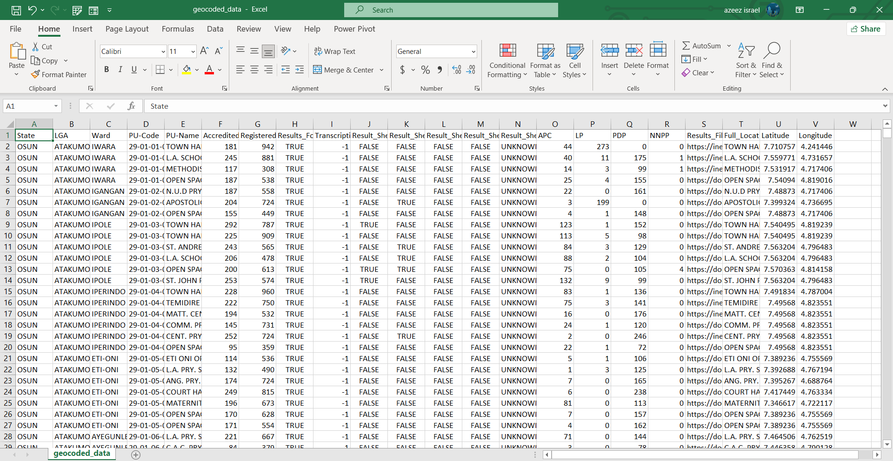
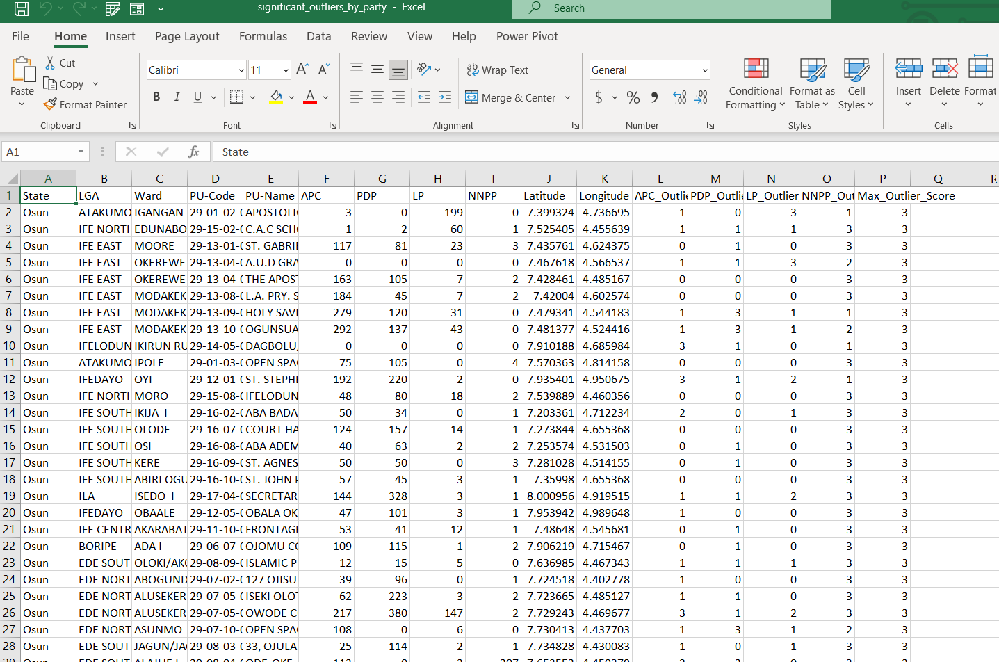
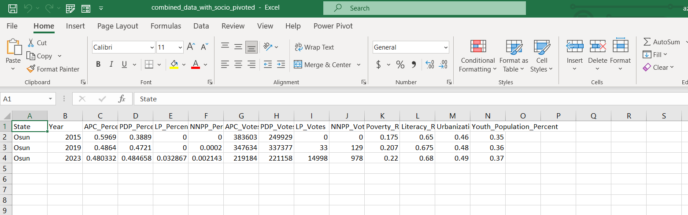

Prepared by Adordev
This project was undertaken to assist the Independent National Electoral Commission (INEC) in identifying potential electoral irregularities in the recently concluded election in Osun State, Nigeria. The goal was to detect outlier polling units where voting patterns significantly deviate from expected patterns or neighboring units, which could indicate manipulation or irregularities. The analysis leverages advanced geospatial techniques, statistical methods, machine learning, temporal comparisons, and demographic data to provide a comprehensive assessment of election integrity.
The project follows five key objectives:
This documentation details the methodologies, results, with references to images for visual representation.
The first objective was to prepare a fully geocoded and cleaned dataset for Osun State, ensuring each polling unit has accurate geospatial data (latitude and longitude).
Dataset Selection: We selected the Osun_crosschecked.csv file from the provided drive link, as Osun State was chosen for this analysis.
Initial Data Inspection: The dataset contained polling unit names, votes for each party (APC, PDP, LP, NNPP), and other metadata but lacked latitude and longitude for most polling units.
Geocoding:
import pandas as pd
from geopy.geocoders import GoogleV3
import time
# Load the dataset
df = pd.read_csv('Osun_crosschecked.csv')
# Initialize the geocoder
geolocator = GoogleV3(api_key='YOUR_API_KEY')
# Function to geocode polling unit addresses
def geocode_address(address):
try:
location = geolocator.geocode(address + ', Osun State, Nigeria')
if location:
return location.latitude, location.longitude
else:
return None, None
except:
return None, None
# Apply geocoding to polling units
df['Latitude'], df['Longitude'] = zip(*df['PU-Name'].apply(geocode_address))
time.sleep(1) # Avoid API rate limits
# Save the geocoded dataset
df.to_csv('Osun_geocoded.csv', index=False)
Data Cleaning:
PU-Name, APC, PDP, LP, NNPP, Latitude, Longitude).Geocoded Dataset: A cleaned CSV file named Osun_geocoded.csv with coordinates for all polling units.
Osun_geocoded.csv, showing columns like PU-Name, APC, PDP, LP, NNPP, Latitude, and Longitude. This image highlights the successful addition of geospatial data.
The second objective was to employ geospatial clustering techniques to identify polling unit clusters based on geographic proximity and conduct a sensitivity analysis by varying neighborhood radii.
Geospatial Clustering with DBSCAN:
import pandas as pd
from sklearn.cluster import DBSCAN
import numpy as np
# Load the geocoded dataset
df = pd.read_csv('Osun_geocoded.csv')
# Extract coordinates
coords = df[['Latitude', 'Longitude']].values
# Convert distances to radians for DBSCAN (Earth's radius ~6371 km)
kms_per_radian = 6371.0
radii = [0.5, 1.0, 2.0] # 500m, 1km, 2km
# Perform DBSCAN clustering for each radius
for radius in radii:
eps = radius / kms_per_radian # Convert radius to radians
db = DBSCAN(eps=eps, min_samples=3, metric='haversine').fit(np.radians(coords))
df[f'Cluster_{int(radius*1000)}m'] = db.labels_
# -1 indicates outliers (noise points)
df[f'Outlier_{int(radius*1000)}m'] = (db.labels_ == -1).astype(int)
# Save the clustered dataset
df.to_csv('Osun_clustered.csv', index=False)
Sensitivity Analysis:
Clustered Dataset: A CSV file named Osun_clustered.csv with additional columns for cluster labels and outlier indicators at each radius.
The third objective was to calculate outlier scores for each polling unit using robust spatial statistical methods and cross-validate with machine learning techniques.
import pandas as pd
import geopandas as gpd
from libpysal.weights import Queen
from esda.moran import Moran_Local
from esda.getisord import G_Local
# Load the clustered dataset
df = pd.read_csv('Osun_clustered.csv')
# Convert to GeoDataFrame
gdf = gpd.GeoDataFrame(df, geometry=gpd.points_from_xy(df.Longitude, df.Latitude))
# Create spatial weights (Queen contiguity)
w = Queen.from_dataframe(gdf)
# Calculate Local Moran's I for PDP votes
moran_loc = Moran_Local(gdf['PDP'], w)
gdf['PDP_Local_Moran_I'] = moran_loc.Is
# Calculate Getis-Ord Gi* for PDP votes
gi = G_Local(gdf['PDP'], w)
gdf['PDP_Getis_Ord_Gi'] = gi.z_sim
# Repeat for other parties (APC, LP, NNPP)
# ...
# Save the dataset with spatial statistics
gdf.to_csv('Osun_spatial_stats.csv', index=False)
from sklearn.ensemble import IsolationForest
# Load the dataset with spatial statistics
df = pd.read_csv('Osun_spatial_stats.csv')
# Features for Isolation Forest (votes and spatial stats)
features = df[['APC', 'PDP', 'LP', 'NNPP', 'PDP_Local_Moran_I', 'PDP_Getis_Ord_Gi']]
# Fit Isolation Forest
iso_forest = IsolationForest(contamination=0.1, random_state=42)
df['Isolation_Forest'] = iso_forest.fit_predict(features)
df['Isolation_Forest'] = df['Isolation_Forest'].map({1: False, -1: True}) # -1 indicates outlier
# Save the dataset
df.to_csv('Osun_with_outlier_scores.csv', index=False)
Max_Outlier_Score was calculated as the highest score across all parties for each polling unit.Osun_with_outlier_scores.csv with columns for Local Moran’s I, Getis-Ord Gi*, Isolation Forest results, and outlier scores for each party.significant_outliers_by_party.csv, sorted by outlier scores per party, showing polling units identified as significant outliers (score ≥ 2).Image 3: Table of Outlier Scores
significant_outliers_by_party.csv, showing columns like Latitude, Longitude, APC_Outlier_Score, PDP_Outlier_Score, LP_Outlier_Score, NNPP_Outlier_Score, and Max_Outlier_Score. This image highlights the polling units with the highest outlier scores.
Image 4: Map of Outliers by Local Moran’s I
The fourth objective was to conduct a historical comparison of voting behaviors and integrate socio-economic or demographic data to contextualize anomalies.
Historical Comparison:
import pandas as pd
# Load historical data (assumed to be in separate CSV files)
df_2015 = pd.read_csv('Osun_2015.csv')
df_2019 = pd.read_csv('Osun_2019.csv')
df_2023 = pd.read_csv('Osun_2023.csv')
# Calculate vote shares
for year, df in [(2015, df_2015), (2019, df_2019), (2023, df_2023)]:
total_votes = df[['APC', 'PDP', 'LP', 'NNPP']].sum()
for party in ['APC', 'PDP', 'LP', 'NNPP']:
df[f'{party}_Vote_Share'] = df[party] / total_votes[party]
df['Year'] = year
df.to_csv(f'Osun_{year}_vote_shares.csv', index=False)
# Combine historical data
historical_df = pd.concat([df_2015, df_2019, df_2023])
historical_df.to_csv('Osun_historical.csv', index=False)
Demographic Integration:
# Load election and demographic data
election_df = pd.read_csv('Osun_with_outlier_scores.csv')
demographic_df = pd.read_csv('Osun_demographics.csv')
# Merge datasets on LGA
merged_df = election_df.merge(demographic_df, on='LGA', how='left')
# Save the merged dataset
merged_df.to_csv('Osun_with_demographics.csv', index=False)
Historical Dataset: A CSV file named Osun_historical.csv with vote shares for each party across 2015, 2019, and 2023.
Merged Dataset with Demographics: A CSV file named Osun_with_demographics.csv with demographic data integrated at the LGA level.
Image 5: Historical Vote Share Trends
Image 6: Demographic Data Table
Osun_with_demographics.csv, showing columns like LGA, Poverty_Rate, Literacy_Rate, and Youth_Population_Percent. This image shows the integration of demographic data
The fifth objective was to develop an interactive dashboard to visualize spatial-temporal anomalies, cluster analysis results, and demographic correlations, showing differences across neighborhoods, parties, and historical trends.
Home Page:
APC Page:
PDP Page:
NNPP Page:
LP Page:
Interactive Dashboard: A Power BI dashboard with five pages, accessible via a shared link. Click Here
Image 8: Home Page of the Power BI Dashboard
Image 9: APC Page of the Power BI Dashboard
Image 10: PDP Page of the Power BI Dashboard
Image 11: NNPP Page of the Power BI Dashboard
Image 12: LP Page of the Power BI Dashboard
Based on the Max_Outlier_Score, the top 5 outlier polling units are:
This project successfully identified outlier polling units in Osun State using advanced geospatial analysis, spatial statistics, and machine learning. The interactive Power BI dashboard provides a comprehensive view of spatial-temporal anomalies, differences across neighborhoods and parties, and historical trends. However, there are gaps in visualizing cluster analysis results and demographic correlations, which could be addressed in future iterations.